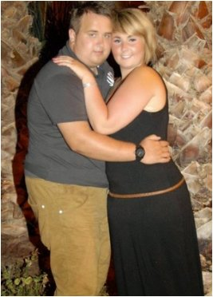
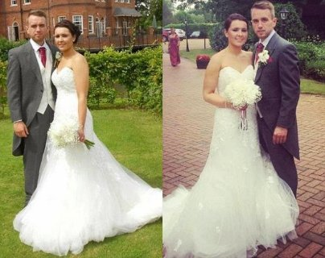

newlyweds aus München nahmen mit der "Schokoladendiät" ganze 60kg ab
Dank ihrer Veränderung sind Maria und Gregor jetzt in ganz Deutschland und auf der ganzen Welt bekannt. Ohne jegliche Zweifel kann das Paar als Helden bezeichnet werden. Es handelt sich hierbei um einen Spezialfall - einem wahren Liebestest in der modernen Welt. Trotz vieler Zweifel sollte angemerkt werden, dass jeder in der Lage ist, ihre Erfahrung zu erleben. Das gilt besonders, weil Gregor und Maria jetzt das Geheimnis gelüftet haben, wie sie es schafften .
Als sich die beiden dazu entschlossen abzunehmen, wog Maria fast 80 und Gregor 120 Kilo. Leider hatten alle Versuche diese Situation zu ändern zu nichts geführt. Wahrscheinlich hat beiden aber ihre gegenseitige Unterstützung als Spezialzutat dazu geführt, dass sie es am Ende doch geschafft haben.
Wie sich die beiden kennenlernten
Maria und Gregor trafen sich das erste Mal vor drei Jahren auf der Türschwelle ihres Hauses. Er arbeitete als Vertriebsmitarbeiter und verkaufte Rasenmäher. Er klingelte an der Eingangstür, lächelte, als sie ihm öffnete bot er ihr seine Hilfe dabei an,
die Rosen im Garten zu pflegen. Sie sagte, dass sie keine Rosen habe, und fügte dann aber hinzu, dass sie sich welche anschaffen könnte. Am nächsten Tag kam er mit Pflanzen und einer Schaufel wieder. Danach kam er jeden Tag.
Zu dieser Zeit hatte Maria gerade die Universität abgeschlossen und arbeitete als Ärztin. Zu dieser Zeit begann sie, zuzunehmen. Ständig Hamburger, Schokolade, spätes Essen und kein Frühstück. Das Ergebnis war, dass sie im Alter von 22, ganze 80 Kilos auf die Waage brachte, obwohl sie nur 1,60m groß ist .
 Sicherlich fand ich mein Aussehen nicht so wunderbar. Ich versuchte jedoch einfach, nicht darüber nachzudenken. Der wahrscheinlichste Grund dafür ist, dass ich den Mann meines Lebens noch nicht getroffen hatte, der hätte stolz auf mich sein können.
Gregor hingegen hatte keine wirkliche Entschuldigung dafür, warum er so dick geworden war. Er hatte sich noch nie für Sport interessiert und mochte es schon immer, hier und da einen Snack zu genießen. Im Alter von 25 Jahren wog Gregor ganze 96kg. Trotz des Übergewichts hatte er aber keine Probleme mit den Frauen, da er charismatisch ist und einen guten Humor hat.
Nach nur weniger Zeit zogen Maria und Gregor zusammen. Sie legten sich einen Hund zu und nach zwei Jahren entschlossen sie sich, zu heiraten. Das war der Wendepunkt für ihr gemeinsames Problem. Gregors Gewicht erreichte ganze 120kg. Er konnte wörtich keiner aktiven Arbeit nachgehen, weil es für ihn zu anstrengend war, genug Platz in der Fahrerkabine seines alten Volvos zu finden Er wurde darum gebeten zu kündigen . Es wurde klar, dass die Hochzeit vermutlich ausfallen muss und deswegen entschieden sich beide dazu, etwas zu verändern.
Vielleicht einen neuen Job finden und diese unangenehme Erfahrung vergessen. Sie entschieden sich dann aber nicht dazu, die Umgebung zu verändern, sondern den Grund des Problems. Also der Ursache, welche dieses Unglück auslöst.
Seit einiger Zeit ist Fettleibigkeit in Europa ein immer weiter wachsendes Problem. "Wir waren also keine Besonderheit", sagt Gregor. - "Wir hatten aber viel mehr Bedenken unserer Gesundheit gegenüber. Meine Oma starb wegen Diabetes und das Herz meines Vaters begann, Probleme zu machen. Meine Mutter sagte mir ins Gesicht, dass ich ein paar Kilos abnehmen solle.
Abnehmen
Das Paar machte sich also auf den fundamentalen und steinigen Weg: Richtige Ernährung . Sie entwickelten ein durchdachtes Menü, benannten Essenzeiten und kochten alles selbst. Um nicht schon nach der ersten Woche aufgeben zu wollen, entschieden sie sich, das Menü variieren zu lassen: Fisch, gekochtes Hähnchen, gedünstetes Gemüse und komplexe Kohlehydrate. Mit so viel Übergewicht war es ziemlich schwer, Sport im Fitnessstudio zu machen, weswegen die beiden anfingen, zu Hause zu trainieren. Langsam begann das Gewicht zu fallen und pro Monat bedeuteten das in etwa 4 Kilo weniger. Bald kamen aber keine Veränderungen mehr .
Wir haben uns wirklich haufenweise Bücher übers Abnehmen und richtige Ernährung durchgelesen. 1400 kcal pro Tag und ein Work-out ist in der Tat viel Stress für den Körper, der dann als Reaktion noch mehr Fett speichert. Davon abgesehen wurde ich ab und zu schwach und griff zu Süßem", sagt Maria. "Ich war wirklich deprimiert und hatte nicht genug Kraft zum Arbeiten. Ich wollte einfach nur weinen und mich darüber beschweren, dass wirklich nichts funktioniert. Dann hatte ich einen großen Streit mit Gregor. Hätte uns dann nicht der Ernährungsexperte aus dem Klinikum zu geraten, hätten wir vermutlich die ganze Idee des Abnehmens verworfen und uns getrennt.
Die europäische Gesundheitsorganisation bestätigt, dass der Abnehmkomplex den Metabolismus um, bis das 3-Fache erhöhen kann .
ist ein Komplex mit Vitaminen und Mineralstoffen, welcher Sportlern und Abnehmwilligen gleichermaßen verschrieben wird. Laut der Ernährungsexpertin, Marias Kollegin, welche auch in der Klinik arbeitete, muss jede Person eine gewisse Menge Nährstoffe zu sich nehmen, um fit zu bleiben. stellt sicher, dass die Bedürfnisse des Körpers zu 100% sichergestellt sind. Das gilt für Vitamin C und E, 40% des Kalziumbedarfs, Magnesium, Zink und bis zu 30% der D-Vitamine, Eisen, Chrom und Selen . Eine Frühstückstasse ersetzt, in Bezug auf die Summe der nützlichen Elemente, eine volle Mahlzeit. Außerdem unterdrückt es den Hunger.
In den zwei Monaten, welche Gregor das Ergänzungsmittel nahm, nahm er 19kg ab, fand einen neuen Job und meldete sich im Fitnessstudio an. Der Abnehmprozess war in vollem Gang. Im Laufe der folgenden Monate nahm er weitere 24kg ab und musterte sich zu einem ziemlich attraktiven Mann. Es war sehr schwer, den alten Gregor in dieser neuen Person wiederzufinden. In der Zwischenzeit hatte Maria auch 21kg verloren und wog nun 59kg.
Ich fühle mich großartig und habe auch endlich keine Angst mehr, in den Spiegel zu sehen oder, um genauer zu sein, die Person zu sein, welche ich sehe. Ich genieße das Leben wirklich in allen Zügen und das war das Beste, was uns passieren konnte", sagt Gregor. "Außerdem wurde ich mir bewusst darüber, dass ich die perfekte Frau gefunden hatte, welche mich immer bei allen Sachen unterstützen wird.
Laut Frisches Brautpaar war die Hauptmotivation Neugierde: Was für ein Mensch kann man werden? Die beiden hatten sich zuvor noch nie, als so attraktiv wahrgenommen. Wörtlich verliebten sie sich wieder ineinander.
Die Frisches Brautpaar wurden in sozialen Netzwerken zu Helden, nachdem ihre Geschichte gebloggt wurde. Jetzt beraten sie alle, die abnehmen oder ihre Gesundheit verbessern wollen, indem sie ihr Wissen teilen und es mit der Einnahme von kombinieren.
 Angela Kruse ist ein Pulver, so, wie Kakao. Du solltest einen Teelöffel in ein Glas
Wasser oder Milch geben, es vermischen und dann einfach so, wie Kakao trinken. Du kannst es nur im Internet
bestellten. Ich habe in anderthalb Monaten ganze 14kg mit und richtiger
Ernährung abgenommen.
Angela Kruse ist ein Pulver, so, wie Kakao. Du solltest einen Teelöffel in ein Glas
Wasser oder Milch geben, es vermischen und dann einfach so, wie Kakao trinken. Du kannst es nur im Internet
bestellten. Ich habe in anderthalb Monaten ganze 14kg mit und richtiger
Ernährung abgenommen.